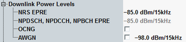

This section defines power levels of physical downlink channels and physical downlink signals.

Defines the energy per resource element (EPRE) of the narrowband reference signal (NRS). The NRS EPRE corresponds to the DL power averaged over all resource elements carrying the NRS within one subcarrier (15 kHz).
The power offset of the NPSS and the NSSS EPRE relative to the NRS EPRE is 0 dB.
Remote command:Displays the energy per resource element (EPRE) of the NPDSCH, NPDCCH and NPBCH.
The power offset relative to the NRS EPRE is 0 dB for 1 antenna port, as defined in 3GPP TS 36.213, section 16.2.2.
Enables or disables the OFDMA channel noise generator (OCNG). OCNG for NB-IoT is defined in 3GPP TS 26.101, annex A.5.3.
If the checkbox is enabled, the OCNG signal is sent in all unused downlink subframes and covers the entire channel bandwidth. OCNG is not used to fill partly used subframes, only to fill unused subframes.
The EPRE for OCNG equals the NRS EPRE. The signal uses QPSK modulation and contains uncorrelated pseudo random data.
Remote command:Total level of the additional white Gaussian noise (AWGN) interferer in dBm/15 kHz (the spectral density integrated across one subcarrier). The reference point for this power setting is the RF output connector.
If the checkbox is enabled, the AWGN signal is added to the DL signal for the entire channel bandwidth.
Remote command: